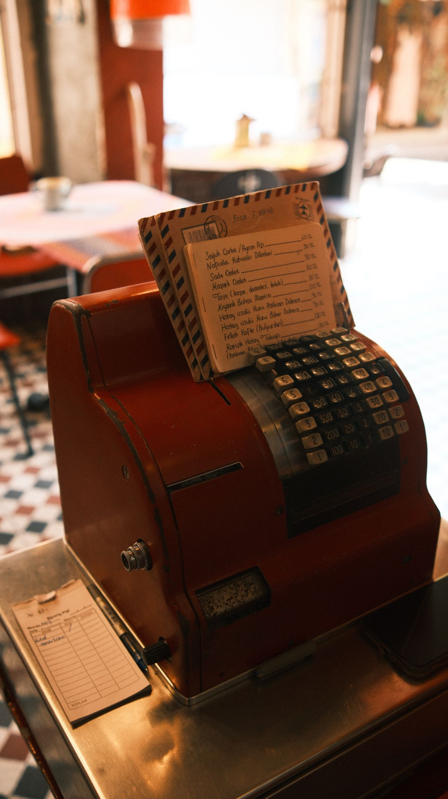
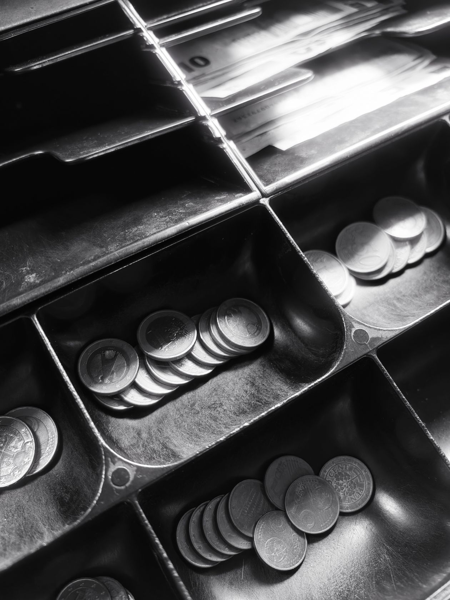
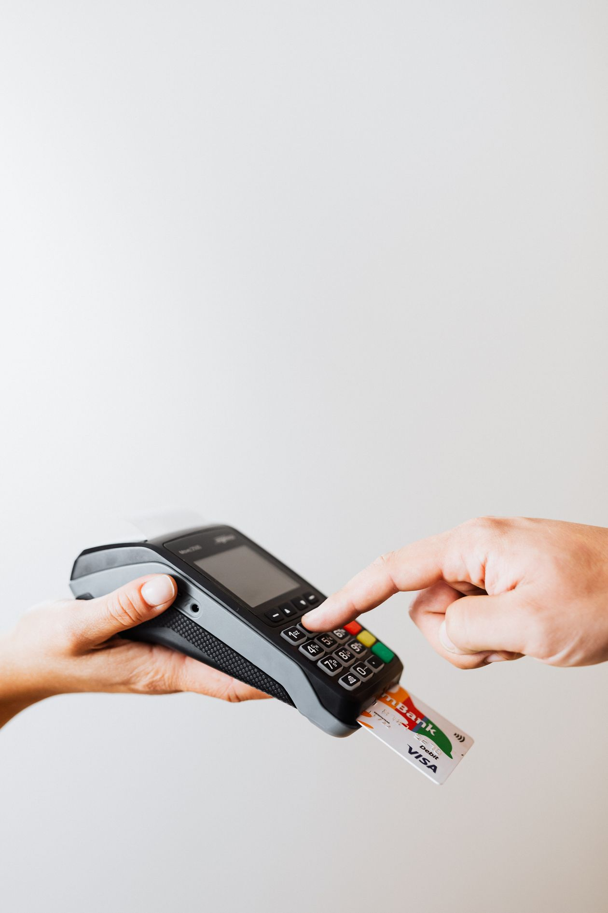
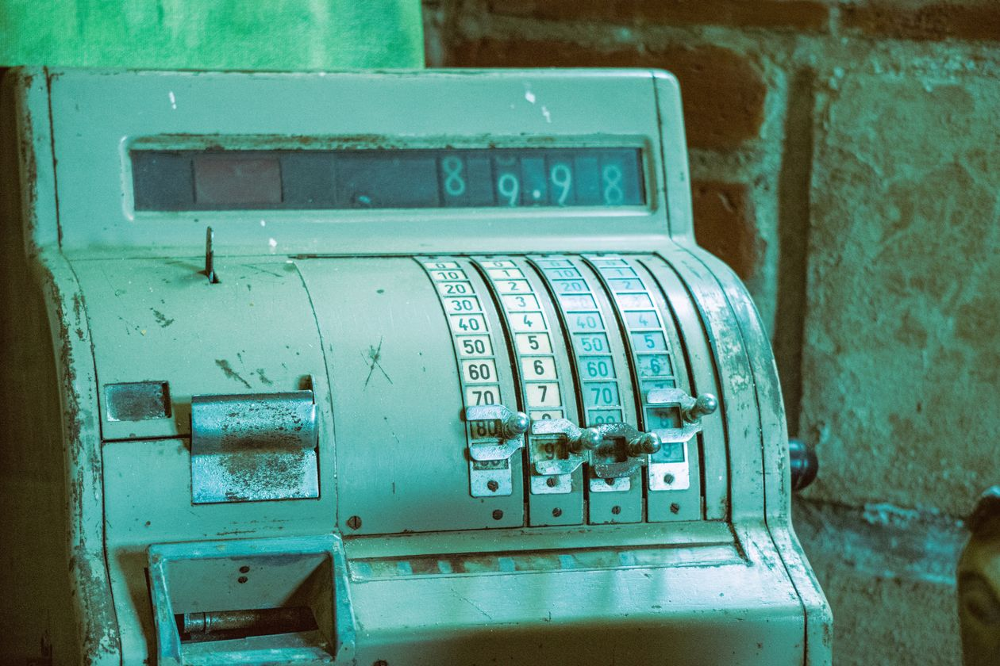

POS Software Cost in Pakistan (2026): An Honest Price Guide

Ask ten vendors what POS software costs in Pakistan and you will get eleven different answers. One says "sirf Rs 5,000 — lifetime!" Another quotes Rs 150,000 plus a yearly "maintenance fee." A third smiles and says the software is free — until you discover every bill costs extra.
By the time you have heard three pitches, you have no idea what is cheap, what is fair, and what is a trap. That is exactly the problem this guide solves. No sales pitch, no hidden agenda — just the real numbers behind POS software costs in Pakistan in 2026, so you can spend smart and spot the traps.
1. There Are Three Price Tags, Not One
Here is the first thing vendors do not want you to understand: you are not buying one thing. A working billing setup in a Pakistani shop has three separate costs, and most sellers only quote the first one:
- The software — the billing program itself (subscription or one-time license)
- The hardware — computer, barcode scanner, receipt printer, cash drawer
- The ongoing costs — support fees, paper rolls, maintenance, upgrades
A vendor who quotes Rs 25,000 for "complete POS" but quietly expects you to already own a computer and printer is not lying, exactly — he is just not telling the whole story. Always ask: "yeh total kharcha hai, ya sirf software?"
2. Software Pricing Models: The Real Math
In 2026, Pakistani POS software comes in two main pricing models. Both are legitimate. One is almost always cheaper over time.
Monthly subscriptions: Rs 2,000 – 5,000/month
Subscription software looks cheap: Rs 2,500 a month feels like nothing. But do the 3-year math — because software is a 3-to-5-year decision, not a 3-month one:
- Rs 2,500/month × 36 months = Rs 90,000
- Rs 4,000/month × 36 months = Rs 144,000
And here is the part that stings: if you stop paying, you usually lose access to the software — and sometimes to your own sales data too. You have rented your own shop's history. Our POS buyer's guide covers exactly what to ask vendors before signing anything.
One-time lifetime licenses: Rs 30,000 – 60,000
Decent one-time POS software for a small Pakistani shop costs Rs 30,000 to Rs 60,000, paid once. It is yours forever — no monthly bill, no "your access has been suspended" surprises. Over three years, a Rs 40,000 one-time license costs you Rs 40,000, while the subscription costs Rs 90,000–144,000. Same shop, same counter, more than double the price.
The 3-year rule: whatever you are quoted, multiply subscriptions by 36 and compare against the one-time price. If a vendor resists this math, the math is working against him.
Free software: what "free" really costs
Some software is genuinely free — open-source tools exist, and some vendors give a basic version away to sell you add-ons later. Free can work if you are tech-savvy and patient. But most "free" POS in Pakistan is free like a free sample: the billing module is free, then stock management costs extra, then khata costs extra, then WhatsApp bills cost extra, then the year ends and "free" needed a Rs 15,000 "annual activation." Count everything before you compare.
3. Hardware: What It Actually Costs in 2026
This is the budget most shopkeepers forget — then panic about. If you are starting from zero, here is what a proper counter setup costs in Pakistan:
| Item | What to buy | Typical price (PKR) |
|---|---|---|
| Computer | Desktop or laptop, any basic i3/i5 — used/refurbished is fine | 35,000 – 70,000 |
| Receipt printer | Thermal 80mm printer (prints fast, no ink needed) | 12,000 – 20,000 |
| Barcode scanner | Wired 1D scanner (wireless costs more) | 4,000 – 8,000 |
| Cash drawer | Metal drawer that opens with the printer | 6,000 – 10,000 |
| UPS | For load shedding — your PC must survive power cuts | 8,000 – 12,000 |

Total hardware budget: Rs 65,000 – 120,000 if you own nothing. Already have a laptop? That drops by half. Already have a printer from an old setup? Keep it — thermal printers last years.
The honest truth: hardware is a one-time cost you pay whether you buy software A or software B, so it should not decide your software choice. But vendors love bundling cheap hardware with expensive software, or expensive hardware with "free" software. Unbundle the quote — price the software and hardware separately, every time.
4. The Hidden Costs Nobody Mentions
This is where honest guides earn their keep. These are the costs that never appear in the quotation but appear on your wallet within a year:
- Installation fees: Rs 5,000 – 15,000 charged by some vendors to "set up" software on your PC. Ask upfront whether installation is included.
- Per-user charges: software is Rs 30,000 — for ONE user. Your second cashier costs another Rs 15,000? For a shop with two shifts, that doubles the price.
- Per-bill or per-transaction fees: some cloud POS charges a few rupees per invoice. A busy kiryana doing 200 bills a day pays real money monthly — on top of the subscription.
- Annual maintenance contracts (AMC): Rs 10,000 – 25,000/year for "support and updates" — on software you already paid for. Always ask: are updates free, or is there an AMC?
- Training charges: Rs 3,000 – 10,000 to teach your staff. Reasonable software should be simple enough that this is unnecessary — if a vendor needs a week to train your cashier, the software is the problem.
- Thermal paper rolls: Rs 150 – 250 per roll, and a busy shop burns through several a month. Not a software cost, but part of the real running cost.
- Data migration: moving your old records in? Some vendors charge Rs 5,000+ for what is often a one-click import.
Add these up and a "Rs 30,000" package quietly becomes Rs 55,000 in year one. Not because the vendor is evil — often it is just how the business works — but because you were never shown the full picture. Now you have it.
5. What Should YOUR Shop Budget?
Not every shop needs the same setup. Here is what a sensible budget looks like for three common shop types in Pakistan in 2026:
Small kiryana / general store (1 counter)
Software: Rs 30,000 – 45,000 one-time · Hardware: Rs 65,000 – 90,000 · Total first year: roughly Rs 100,000 – 135,000. You need fast billing, stock alerts, and khata — nothing fancy. A refurbished laptop keeps the hardware bill low.
Pharmacy / medical store
Software: Rs 35,000 – 55,000 one-time · Hardware: Rs 70,000 – 100,000 · Total first year: roughly Rs 110,000 – 155,000. Pharmacies need batch number and expiry tracking — do not buy software missing these; "we will add it later" means never. If this is you, our medical store software guide breaks down exactly what pharmacy billing software must include.
Multi-branch or larger retail (2+ counters)
Software: Rs 60,000 – 120,000 one-time (or per-branch licensing — ask!) · Hardware: Rs 120,000 – 200,000 · Total first year: roughly Rs 180,000 – 320,000. The critical question here is per-branch pricing: some vendors charge the full license again for branch two. Negotiate this before buying, not after.

6. Deal or Trap? Five Quick Checks
When a price sounds too good — or too high — run these five checks before deciding:
- Is there a real free trial? At least 30 days, with the full software — not a demo with half the buttons disabled. No trial, no trust.
- Do you keep your data? Can you export every sale, product, and khata record to Excel anytime — including after you cancel? "No" is a deal-breaker at any price.
- What breaks when the internet goes down? In Pakistan, "works only online" is not a feature, it is a failure. Billing must work with zero internet.
- Who answers when it breaks at 8 PM? Email-only support with 48-hour replies is worth exactly Rs 0. WhatsApp support in Urdu, during shop hours, is what you are actually paying for.
- What does year two cost? Add subscription fees, AMCs, paper, per-user charges. A Rs 25,000 package with a Rs 20,000/year AMC is a Rs 85,000 three-year package wearing a disguise.

The Bottom Line
Here is the honest summary, in one paragraph: a small Pakistani shop should expect to pay Rs 30,000 – 60,000 once for good software, plus Rs 65,000 – 120,000 once for hardware if starting from zero, and roughly Rs 5,000 – 10,000 a year in running costs (paper rolls, the occasional repair). Anyone quoting far below that is hiding something; anyone quoting far above it is selling to chains, not to you. Do the 3-year math, unbundle every quote, and never buy without a real trial.
And remember what the software is actually for: shops that switch to proper billing do not just bill faster — they catch stock leaks, recover udhar on time, and finally know their real profit. Measured against that, the right Rs 40,000 one-time purchase is the cheapest investment your shop will ever make. The wrong Rs 25,000 one is the most expensive.
Photo credits: Cash register photo by Harun · Cash drawer photo by Kamil Čičila · Payment terminal photo by Kaboompics · Old register close-up by Ezkol Arnak — all via Pexels.
One honest price. No hidden fees. Try it free for 30 days.
shopcos soft: Rs 40,000 one-time (lifetime license), 100% offline billing, khata management, expiry tracking, full Urdu interface, staff controls, WhatsApp support in your language — and your data stays on your PC. No per-bill charges, no AMC, no per-user upsells.
Start 30-day Free TrialQuestions? WhatsApp us: 0326 4025618